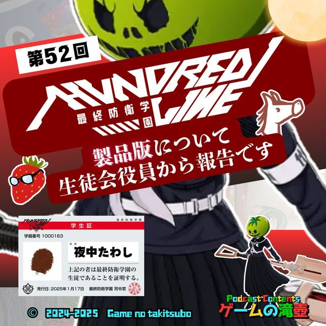
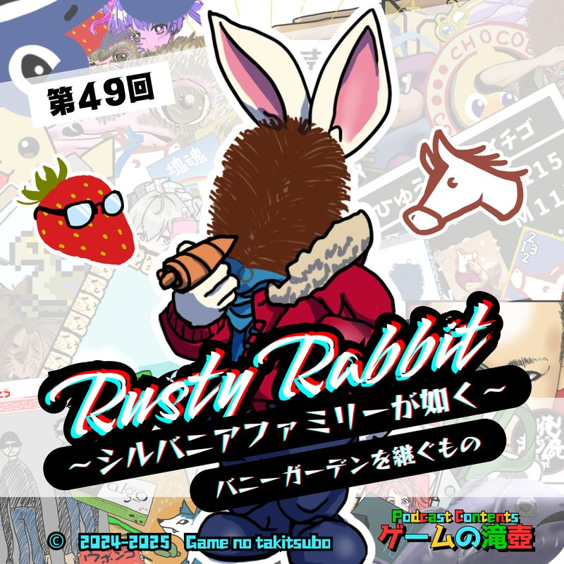
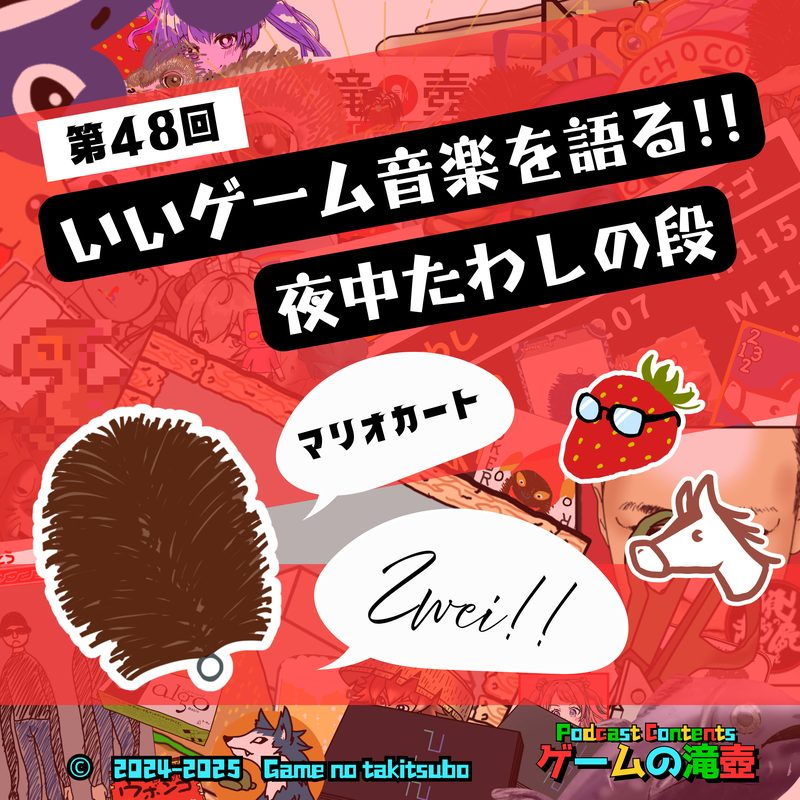
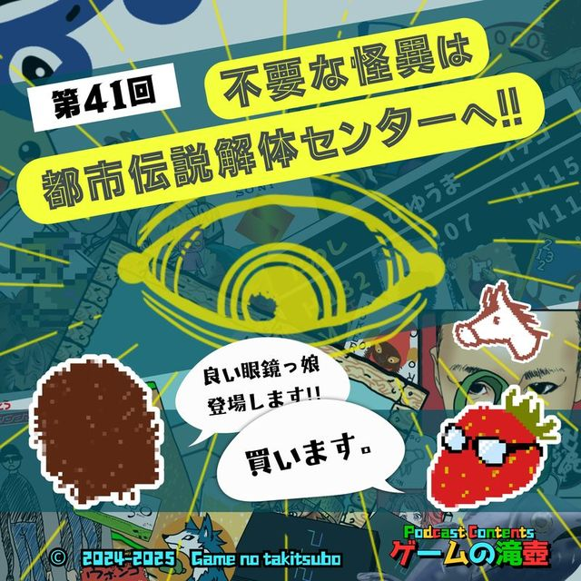

HUNDRED LINE -最終防衛学園-
ポッドキャスト「ゲームの滝壺」で「HUNDRED LINE -最終防衛学園-」が話題に出た回の一覧です。
滝壺での登場 22回メインテーマとして語られた回があります。
 #832025.12.17⭐ メインで語られた回
モンスターハンターワイルズ、HUNDRED LINE -最終防衛学園-、スペルトナエル…滝壺GOTY2025！
滝壺の3人がそれぞれのGOTY（ゲーム・オブ・ザ・イヤー）2025を発表します！
#832025.12.17⭐ メインで語られた回
モンスターハンターワイルズ、HUNDRED LINE -最終防衛学園-、スペルトナエル…滝壺GOTY2025！
滝壺の3人がそれぞれのGOTY（ゲーム・オブ・ザ・イヤー）2025を発表します！

#522025.05.21⭐ メインで語られた回 HUNDRED LINE -最終防衛学園-（ハンドレッドライン）製品版について生徒会役員から報告です ▶ 04:11〜 HUNDRED LINE -最終防衛学園-そこそこプレイした2人が、ハンドレッドラインの魅力その他について語ります！ #402025.02.26⭐ メインで語られた回
HUNDRED LINE -最終防衛学園-（ハンドレッドライン）体験版について生徒会役員から報告です
▶ 03:04〜 HUNDRED LINE -最終防衛学園-（体験版）HUNDRED LINE ─最終防衛学園─の体験版を遊んだ感想を、生徒会役員からお伝えします！
#402025.02.26⭐ メインで語られた回
HUNDRED LINE -最終防衛学園-（ハンドレッドライン）体験版について生徒会役員から報告です
▶ 03:04〜 HUNDRED LINE -最終防衛学園-（体験版）HUNDRED LINE ─最終防衛学園─の体験版を遊んだ感想を、生徒会役員からお伝えします！
 #52024.06.26📑 チャプターで登場
紙だから何が起きても全年齢対象！ ペーパーマリオ オリガミキング（おまけ：先日のニンダイについて）
▶ 47:33〜 HUNDRED LINE -最終防衛学園-今回のテーマはペーパーマリオ オリガミキング！ キャッチーな見た目に反し、マリオとは思えない衝撃展開が目白押しとなっております。 6月18日に配信されたニンテンドーダイレクトについても色々と話します。
#52024.06.26📑 チャプターで登場
紙だから何が起きても全年齢対象！ ペーパーマリオ オリガミキング（おまけ：先日のニンダイについて）
▶ 47:33〜 HUNDRED LINE -最終防衛学園-今回のテーマはペーパーマリオ オリガミキング！ キャッチーな見た目に反し、マリオとは思えない衝撃展開が目白押しとなっております。 6月18日に配信されたニンテンドーダイレクトについても色々と話します。
 #932026.02.18💬 トーク内で登場
くさタイプ
くさタイプの回です！！！！
#932026.02.18💬 トーク内で登場
くさタイプ
くさタイプの回です！！！！
 #862026.01.07💬 トーク内で登場
新春！ 五十音全部にふさわしいゲームタイトルを集めて滝壺かるたを作ろう！
滝壺にまつわるゲームタイトルを集めに集めて、ゲームタイトルかるたを考案します！
#862026.01.07💬 トーク内で登場
新春！ 五十音全部にふさわしいゲームタイトルを集めて滝壺かるたを作ろう！
滝壺にまつわるゲームタイトルを集めに集めて、ゲームタイトルかるたを考案します！
 #692025.09.10💬 トーク内で登場
なので！ ロックマンシリーズで雑談します。
初代ロックマンやロックマンXはもちろん、ロックマン・ザ・パワーバトルやロックマンズサッカーの話題も出ます！ ワイリーーッ！！
#692025.09.10💬 トーク内で登場
なので！ ロックマンシリーズで雑談します。
初代ロックマンやロックマンXはもちろん、ロックマン・ザ・パワーバトルやロックマンズサッカーの話題も出ます！ ワイリーーッ！！
 #592025.07.09💬 トーク内で登場
スペルトナエル が タノシイハナシ
恐ろしく安いのにあまりにも面白いゲーム、スペルトナエルについて話します！
#592025.07.09💬 トーク内で登場
スペルトナエル が タノシイハナシ
恐ろしく安いのにあまりにも面白いゲーム、スペルトナエルについて話します！
 #582025.07.02💬 トーク内で登場
わるい敵 ～わるい村 ep03～ 同時上映 リアル桃鉄
わるい敵には ご用心
#582025.07.02💬 トーク内で登場
わるい敵 ～わるい村 ep03～ 同時上映 リアル桃鉄
わるい敵には ご用心
 #552025.06.11💬 トーク内で登場
今話すなら当然スイッチの話！ マリオ、ポケモン、ドラクエ…に登場するスイッチを語る！！
スイッチの話をしております！！
#552025.06.11💬 トーク内で登場
今話すなら当然スイッチの話！ マリオ、ポケモン、ドラクエ…に登場するスイッチを語る！！
スイッチの話をしております！！
 #542025.06.04💬 トーク内で登場
ゲームの滝壺 2周目はじめました。クロノ・トリガー、ニーア オートマタ、鉄腕アトム アトムハートの秘密、オートローグ…周回要素のあるゲーム！
ゲームの「2周目」に関する話、予想より奥が深いです。
#542025.06.04💬 トーク内で登場
ゲームの滝壺 2周目はじめました。クロノ・トリガー、ニーア オートマタ、鉄腕アトム アトムハートの秘密、オートローグ…周回要素のあるゲーム！
ゲームの「2周目」に関する話、予想より奥が深いです。
 #532025.05.28💬 トーク内で登場
株式会社滝壺 2025年5月期決算説明会
異様なタイトルですが、ゲームの滝壺一周年記念回です！ 二年目もゲームの滝壺をよろしくお願いします！！
#532025.05.28💬 トーク内で登場
株式会社滝壺 2025年5月期決算説明会
異様なタイトルですが、ゲームの滝壺一周年記念回です！ 二年目もゲームの滝壺をよろしくお願いします！！
 #512025.05.14💬 トーク内で登場
キャッチコピーは「どうあがいても、滝壺」
ゲームのキャッチコピー全般について扱ったら、ひゅうまが張り切りすぎた回です！ ※某SIRENの話題は一切出ません
#512025.05.14💬 トーク内で登場
キャッチコピーは「どうあがいても、滝壺」
ゲームのキャッチコピー全般について扱ったら、ひゅうまが張り切りすぎた回です！ ※某SIRENの話題は一切出ません
 #502025.05.07💬 トーク内で登場
ゲームの滝壺50回記念！「雑談」
ガムトークを使って初の雑談回をしてみましたが… やはり昔のゲームの話題、多めです。
#502025.05.07💬 トーク内で登場
ゲームの滝壺50回記念！「雑談」
ガムトークを使って初の雑談回をしてみましたが… やはり昔のゲームの話題、多めです。

#492025.04.30💬 トーク内で登場 Rusty Rabbit（ラスティ・ラビット） ～シルバニアファミリーが如く～ バニーガーデンを継ぐもの ウサギが主人公のあのゲーム、Rusty Rabbit（ラスティ・ラビット）を紹介！ ほか新コーナーとしてわるい宝箱の目撃情報、さらについに発売されたHUNDRED LINEのプレイ状況なども。
#482025.04.23💬 トーク内で登場 いいゲーム音楽を語る！ ～夜中たわしの段～ マリオカート、テイルズオブレジェンディア、まもるクンは呪われてしまった！… いいゲーム音楽、ようやく3人分が完結です！ 今回のエンディングでは、イチィゴォーのHUNDRED LINE体験会レポートも！ #472025.04.16💬 トーク内で登場
わるい宝箱 ～わるい村 ep02～ 同時上映 いきなりストロベリー
わるい宝箱警察、出動します！ 本当にわるい宝箱は、宝箱ではなかったのです……。
#472025.04.16💬 トーク内で登場
わるい宝箱 ～わるい村 ep02～ 同時上映 いきなりストロベリー
わるい宝箱警察、出動します！ 本当にわるい宝箱は、宝箱ではなかったのです……。
 #452025.04.01💬 トーク内で登場
キメラのつばさ ★★★★☆ とてもいい商品ですが、天井に穴があいたので星マイナス1です
滝壺の3人が通販で買った（？）アイテムの紹介をしています！
#452025.04.01💬 トーク内で登場
キメラのつばさ ★★★★☆ とてもいい商品ですが、天井に穴があいたので星マイナス1です
滝壺の3人が通販で買った（？）アイテムの紹介をしています！
 #422025.03.12💬 トーク内で登場
一方その頃、FF4はダチョウを使った…あの素晴らしいゲームCMをもう一度
あの頃（90年代～00年代）のゲームCMについて語っております！
#422025.03.12💬 トーク内で登場
一方その頃、FF4はダチョウを使った…あの素晴らしいゲームCMをもう一度
あの頃（90年代～00年代）のゲームCMについて語っております！

#412025.03.05💬 トーク内で登場 不要な怪異は都市伝説解体センターへ！ メガネは必要！！（イチィゴォー談） 都市伝説解体センターについてネタバレなしで感想を話します！ #392025.02.19💬 トーク内で登場
いいゲーム音楽を語る！ ～ひゅうまの書～ ロックマン、東方シリーズ、テイルズオブエターニア…
ひゅうまの選ぶいいゲーム音楽が、あなたの記憶を掘り起こします……
#392025.02.19💬 トーク内で登場
いいゲーム音楽を語る！ ～ひゅうまの書～ ロックマン、東方シリーズ、テイルズオブエターニア…
ひゅうまの選ぶいいゲーム音楽が、あなたの記憶を掘り起こします……
 #352025.01.22💬 トーク内で登場
滝壺メンバーが選ぶサイコーレビュー！ YourGOTY2024レビュー投稿キャンペーン
ゲームの滝壺が選んだYourGOTY2024レビュー3本+10本を大紹介！ ニンテンドースイッチ2の話（個人的見解）とあの生徒会に入った話も！
#352025.01.22💬 トーク内で登場
滝壺メンバーが選ぶサイコーレビュー！ YourGOTY2024レビュー投稿キャンペーン
ゲームの滝壺が選んだYourGOTY2024レビュー3本+10本を大紹介！ ニンテンドースイッチ2の話（個人的見解）とあの生徒会に入った話も！
TALKED TOGETHER同じ回で話題に出たタイトル
🎧 ▶付きの時刻を押すと、その話題の頭からその場で再生できます。
「HUNDRED LINE -最終防衛学園-」の話がもっと聴きたくなったら、おたよりでリクエストしてもらえると番組が喜びます。